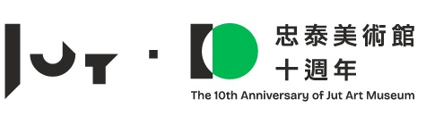

01 填寫資料
資料僅在此頁面即時處理，不上傳、不寫入瀏覽器儲存空間。
02 即時預覽
完成必填欄位後即可複製。
03 貼上至郵件設定
Outlook：開啟設定中的簽名檔，建立或編輯簽名，貼上並儲存。
Gmail：設定 → 查看所有設定 → 一般 → 簽名 → 建立新簽名 → 貼上 → 儲存變更。
請使用一般貼上（Ctrl+V），不要使用純文字貼上。若 LOGO 未顯示，請使用郵件編輯器的插入圖片功能，重新插入正式 LOGO，等比設定寬 7 cm。寄出測試信確認格式。
取得 LOGO 圖檔
填寫個人資料，即時產生符合館方 CI 規範的簽名檔。
2026/11/26 Version · 適用期間 2026.12.01–2028.01.16
資料僅在此頁面即時處理，不上傳、不寫入瀏覽器儲存空間。
完成必填欄位後即可複製。
Outlook：開啟設定中的簽名檔，建立或編輯簽名，貼上並儲存。
Gmail：設定 → 查看所有設定 → 一般 → 簽名 → 建立新簽名 → 貼上 → 儲存變更。
請使用一般貼上（Ctrl+V），不要使用純文字貼上。若 LOGO 未顯示，請使用郵件編輯器的插入圖片功能，重新插入正式 LOGO，等比設定寬 7 cm。寄出測試信確認格式。
取得 LOGO 圖檔